Project 4A · CS180, Fall 2026 · Tan Ee Khai
I photographed three scenes by rotating my phone about a fixed point, recovered the homography between each pair of photos from hand-clicked correspondences, wrote inverse warping with nearest-neighbour and bilinear interpolation from scratch, used it to rectify a flyer and a Pokémon card, and stitched each scene into a blended mosaic.
Everything is written with NumPy. I only use library code for loading and resizing images, for solving the least-squares system, and for plotting. Before processing, every photo is downscaled so that its long side is 1000 pixels, which keeps the warps fast. All clicked points and all results below are on these downscaled images.
For each scene I stood in one spot and rotated the phone between shots, so that the camera's centre of projection stayed fixed and every pair of photos is related by a homography. Neighbouring photos overlap by roughly half a frame. Each scene has three photos, left, centre and right, and the centre photo is the reference for its mosaic.
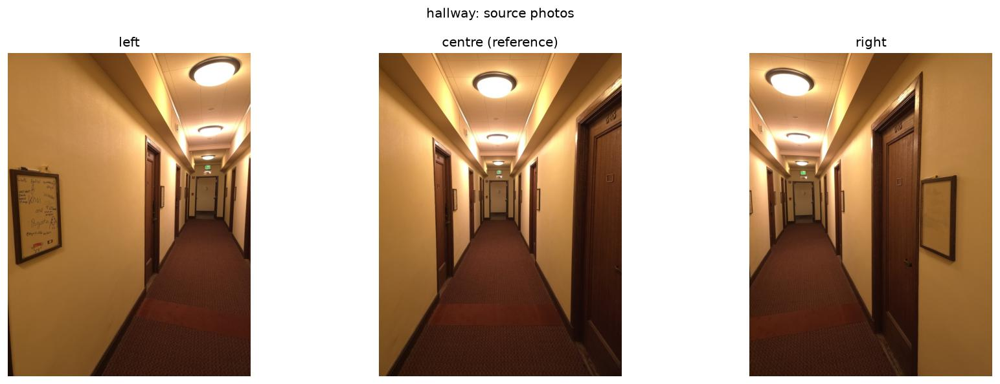
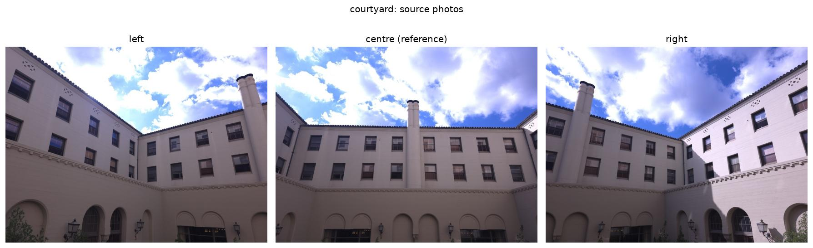
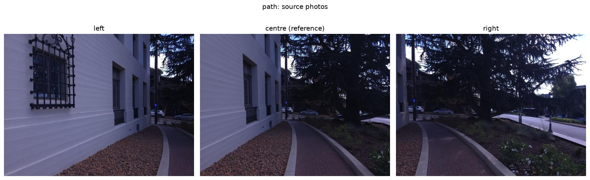
A homography maps a point (x, y) in one image to (x′, y′) in another through a 3 × 3 matrix with its bottom-right entry fixed at 1:
The matrix produces a scaled point, and dividing by w = g x + h y + 1 gives the real position. This division is what lets a homography represent perspective: points farther from the camera get a larger w and are pulled closer together. Multiplying both sides by the denominator turns each correspondence into two equations that are linear in the eight unknowns a to h:
The x′ equation contains a, b, c, g and h, and the y′ equation contains d, e, f, g and h. My computeH(im1_pts, im2_pts) stacks these two rows for every correspondence into a system Ah = b, where A is 2n × 8, h is the vector of eight unknowns and b holds the target coordinates. With four correspondences the system is square. With more it is overdetermined, and I solve it with least squares, which minimises the total squared error over all equations. The eight values, followed by the fixed 1, are then reshaped into the 3 × 3 matrix.
def build_system(im1_pts, im2_pts):
A = np.zeros((2 * n, 8)); b = np.zeros(2 * n)
for i, ((x, y), (xp, yp)) in enumerate(zip(p, q)):
A[2 * i] = [x, y, 1, 0, 0, 0, -x * xp, -y * xp]
A[2 * i + 1] = [0, 0, 0, x, y, 1, -x * yp, -y * yp]
b[2 * i], b[2 * i + 1] = xp, yp
return A, b
def computeH(im1_pts, im2_pts):
A, b = build_system(im1_pts, im2_pts)
h, *_ = np.linalg.lstsq(A, b, rcond=None)
return np.append(h, 1.0).reshape(3, 3)
I made up a homography, sent ten random points through it, and checked that computeH recovers it. With exact points the largest error in any matrix entry is about 6 × 10−10, which is rounding error. I then added about one pixel of random noise to the target points, to imitate imperfect clicking, and solved with 4, 6 and 10 of them. The error is measured against the noise-free positions.
| Points used | Mean reprojection error |
|---|---|
| 4 | 2.29 px |
| 6 | 0.58 px |
| 10 | 0.47 px |
With four points every clicking error goes straight into the matrix, and one pixel of noise grows into more than two pixels of error. With more points, least squares averages the errors out, so I used eight correspondences for each pair of photos in the mosaics.
I wrote my own clicking tool in matplotlib. For rectification it records four corners on one image. For mosaics it shows the side photo and the centre photo next to each other and takes clicks in alternation, giving each pair the same number and colour in both panels. A right click undoes the last point, and clicks are saved to a file so they are only made once. Inside the notebook kernel a single click was sometimes registered several times, so the tool ignores any click within 3 pixels of an earlier one.
Finding the points was an arduous process and required zooming in to pixel level, since items, specifically edges or corners that can be recognised, were small for the pictures that I used. After downscaling, a window corner or the tip of a door frame is only a few pixels across, so a careless click lands a pixel or two off, and the solver test above shows how much that matters. I zoomed in on every point before clicking it, and I chose sharp, unmistakable features spread across the whole overlap, such as window and door corners, the chimney top and the ends of light fixtures. I avoided the sky, clouds and leaves, which moved between shots, and objects very close to the camera, where any small movement of the phone shows up as parallax.
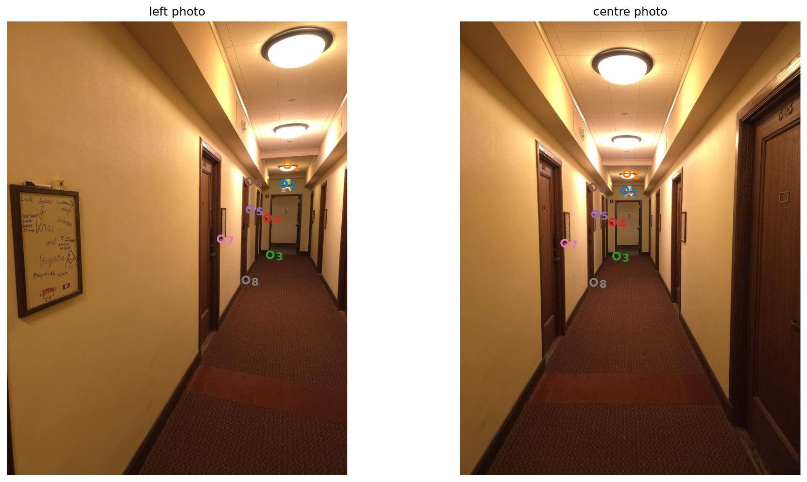
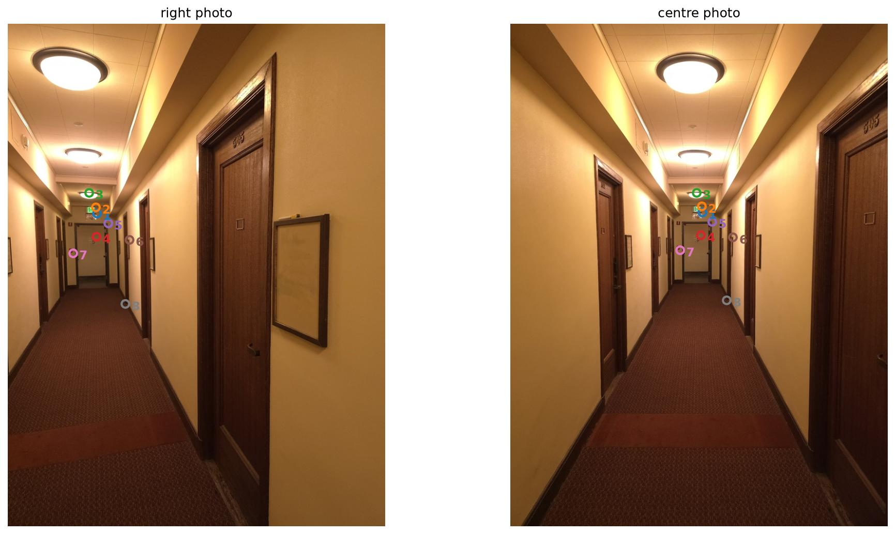
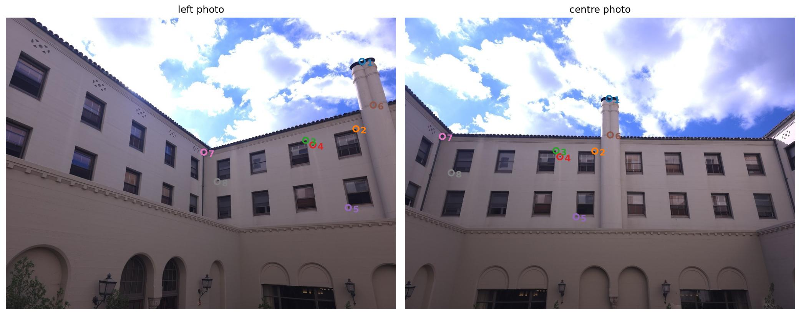
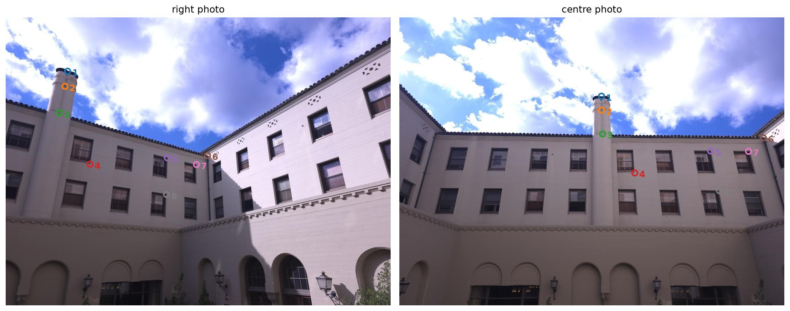
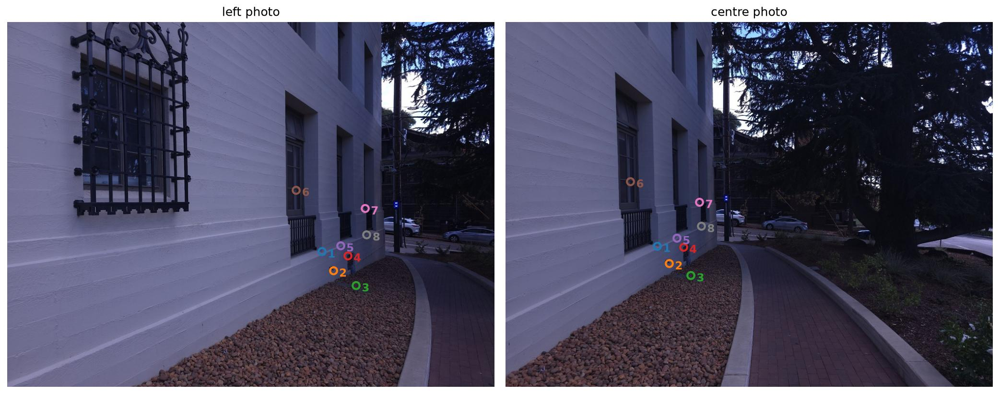
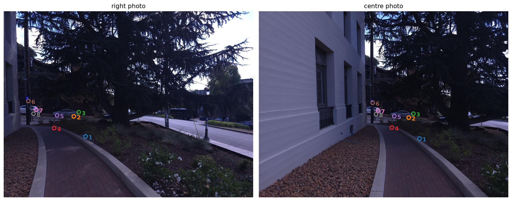
Each side photo's homography maps it into its centre photo's coordinates. With eight pairs the least-squares fit cannot pass through every point exactly, so the reprojection error, the distance between where H sends each clicked point and where I clicked its partner, measures how consistent the clicks are. Every pair is within 3 pixels.
| Scene | Photo pair | Pairs | Mean error | Max error |
|---|---|---|---|---|
| Hallway | left → centre | 8 | 1.36 px | 2.12 px |
| right → centre | 8 | 0.53 px | 1.07 px | |
| Courtyard | left → centre | 8 | 1.45 px | 2.70 px |
| right → centre | 8 | 1.17 px | 2.54 px | |
| Path | left → centre | 8 | 0.59 px | 1.42 px |
| right → centre | 8 | 0.40 px | 0.75 px |
Hallway H left -> centre H right -> centre [[ 1.5030 -0.0042 -418.5125] [[ 0.5965 0.0175 240.8357] [ 0.3026 1.1383 -83.9428] [-0.2971 0.9420 44.3227] [ 0.0007 -0.0002 1.0000]] [-0.0007 0.0001 1.0000]] Courtyard H left -> centre H right -> centre [[ 2.6392 -0.6161 -952.4740] [[ 0.3014 0.1088 400.4872] [ 1.1273 1.9394 -695.3179] [-0.3957 0.7272 143.9139] [ 0.0019 -0.0004 1.0000]] [-0.0007 -0.0001 1.0000]] Path H left -> centre H right -> centre [[ 3.3514 -0.1196 -1341.0668] [[ 0.3494 0.0533 387.2601] [ 0.9187 2.3997 -598.4347] [-0.2722 0.8832 64.7576] [ 0.0024 -0.0003 1.0000]] [-0.0007 0.0001 1.0000]]
The systems of equations and homographies for the two rectifications are shown with them in A.3.
I use inverse warping. Forward warping pushes each input pixel to where H sends it, which leaves holes wherever the warp stretches the image. Inverse warping instead loops over the output pixels and asks where each one came from:
I treat (0, 0) as the centre of the first pixel. The two interpolation methods differ only in step 4:
Both functions, warpImageNearestNeighbor(im, H) and warpImageBilinear(im, H), return the warped image, its alpha mask and its offset. They also accept an optional bounding box, which the mosaic step uses to warp every photo into one shared canvas.
The white "Cozy Paint & Tea Night" flyer is printed on US letter paper, so its true shape is an 8.5 × 11 rectangle. I clicked its four corners as the source points and defined the destination by hand as an 8.5 : 11 rectangle anchored at the clicked top-left corner. The rectangle's width is the average of the flyer's top and bottom edge lengths in the photo, about 150 pixels, so the rectified flyer stays about the same size as in the original, and its height is that width × 11 / 8.5.
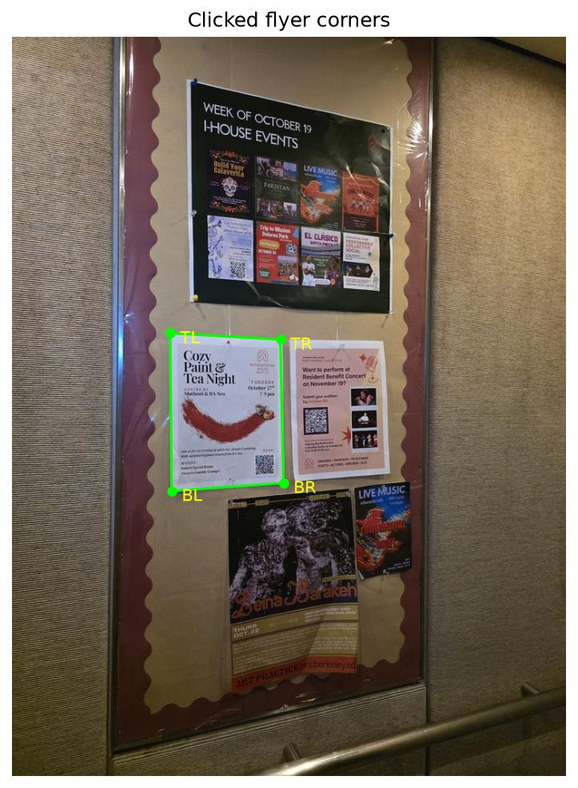
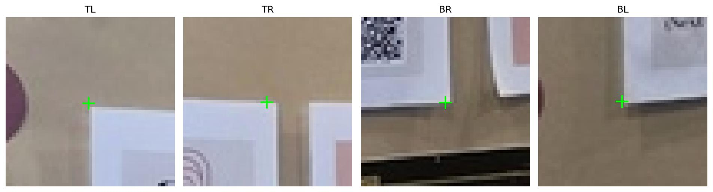
A = [[ 213.61 400.47 1 0 0 0 -45629.23 -85544.40] [ 0 0 0 213.61 400.47 1 -85544.40 -160376.22] [ 362.70 409.05 1 0 0 0 -132054.74 -148930.22] [ 0 0 0 362.70 409.05 1 -145250.47 -163812.25] [ 366.99 603.20 1 0 0 0 -133616.68 -219617.92] [ 0 0 0 366.99 603.20 1 -218434.77 -359028.45] [ 215.75 613.92 1 0 0 0 -46086.36 -131139.45] [ 0 0 0 215.75 613.92 1 -128415.76 -365409.06]] b = [213.61 400.47 364.09 400.47 364.09 595.21 213.61 595.21] H = [[ 0.7216 0.0086 37.5706] [-0.2706 0.8803 71.1463] [-0.0006 0.0001 1.0000]]
With exactly four points the solution passes through all of them, so the reprojection error is zero.
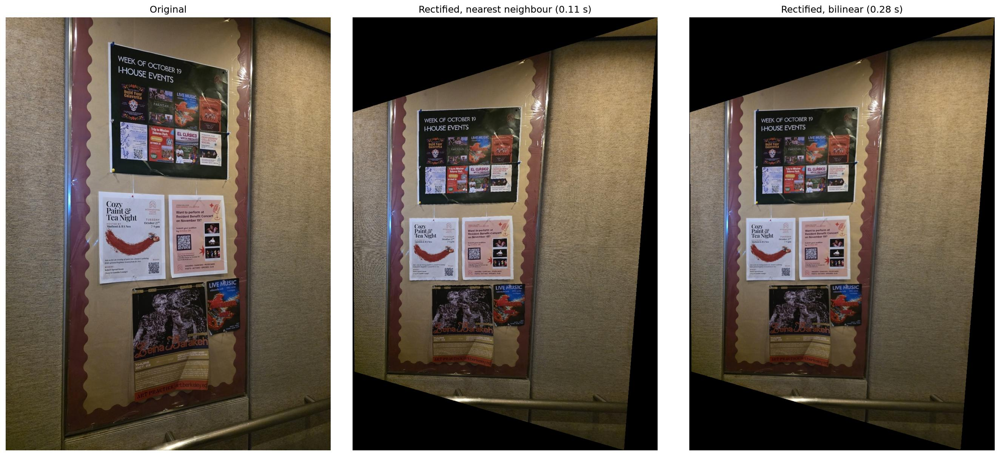
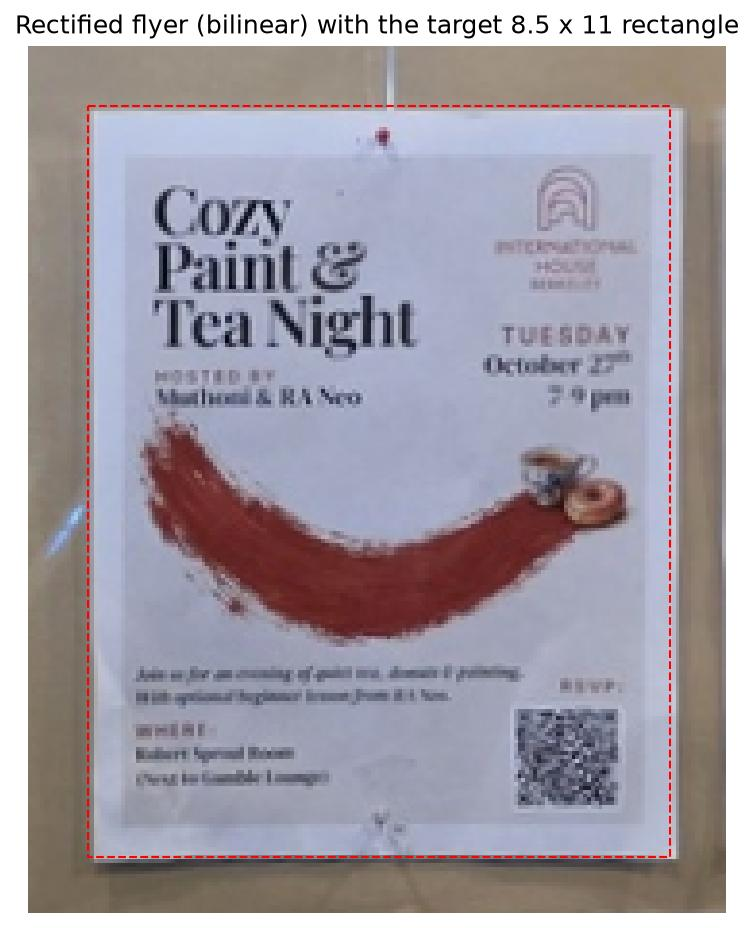
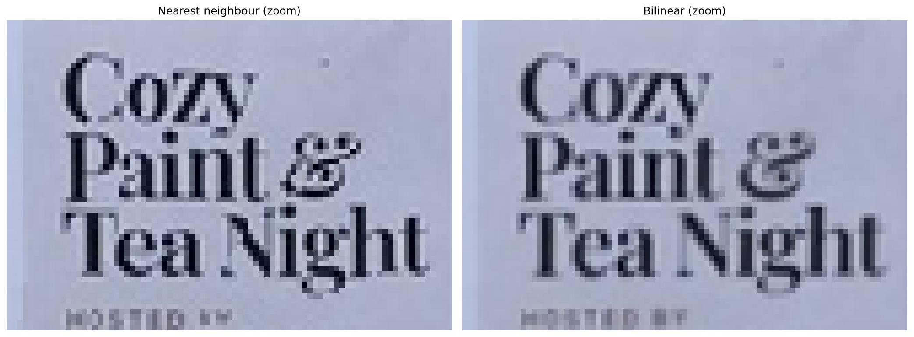
The second target is a Mega Charizard EX card lying flat on my desk, photographed from above at an angle. Pokémon cards are a standard 63 × 88 mm, so the destination is a rectangle with a height-to-width ratio of 88 : 63. The cards have rounded corners, so I clicked where the two straight edges would meet if they continued, rather than on the curve.
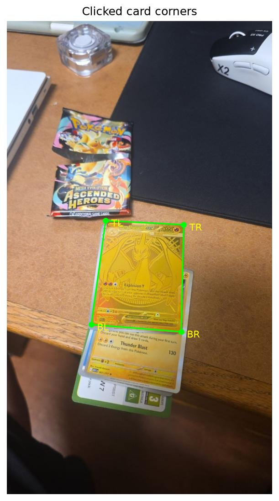
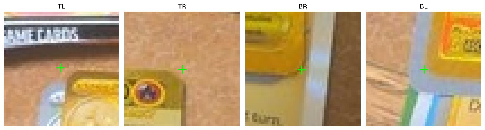
A = [[ 208.72 421.52 1 0 0 0 -43564.04 -87979.65] [ 0 0 0 208.72 421.52 1 -87979.65 -177679.11] [ 374.03 430.22 1 0 0 0 -144732.10 -166475.00] [ 0 0 0 374.03 430.22 1 -157661.13 -181346.33] [ 368.59 656.42 1 0 0 0 -142627.08 -254003.81] [ 0 0 0 368.59 656.42 1 -247132.46 -440116.91] [ 178.27 641.20 1 0 0 0 -37208.51 -133831.26] [ 0 0 0 178.27 641.20 1 -119526.59 -429912.19]] b = [208.72 421.52 386.95 421.52 386.95 670.48 208.72 670.48] H = [[ 1.6200 0.4354 -217.0485] [ -0.0466 2.3245 -354.9876] [ 0.0001 0.0010 1.0000]]
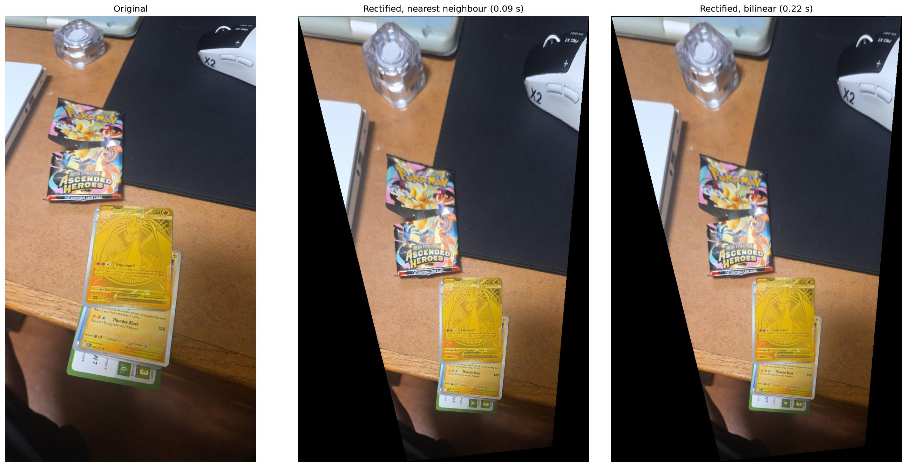
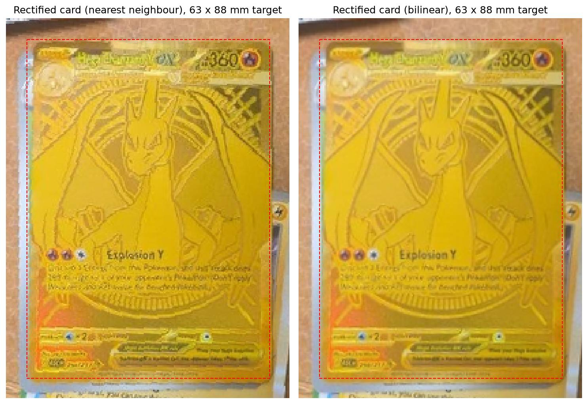
| Image | Output size | Nearest neighbour | Bilinear |
|---|---|---|---|
| Flyer | 952 × 1352 | 0.11 s | 0.28 s |
| Card | 866 × 1329 | 0.09 s | 0.22 s |
On average, bilinear took about 3 times as much as nearest neighbour, and in terms of perceived quality, bilinear did not provide that much of a quality increase, though nearest neighbours produces more jagged, blocky edges while bilinear produces smoother image at the cost of slight softness even in text. Text is hard to reproduce simply because its letters are made of thin strokes with sharp edges between dark ink and light paper, and after downscaling each letter is only a few pixels wide. The warp almost never lands exactly on a pixel centre, so nearest neighbour snaps each sample to the closest pixel, which makes some strokes a pixel thicker or thinner than others and turns diagonal edges into steps. Bilinear instead blends the ink with the paper beside it, so every sharp edge becomes a short grey ramp and the letters look slightly blurred.
Because of this, I use bilinear interpolation for all of the mosaics.
All three mosaics are planar, so photos far from the reference are stretched. The courtyard and path each span a wide angle, so their side photos are stretched to several times their original size at the outer edges, which gives both mosaics a bow-tie shape. A cylindrical projection would handle that width better.
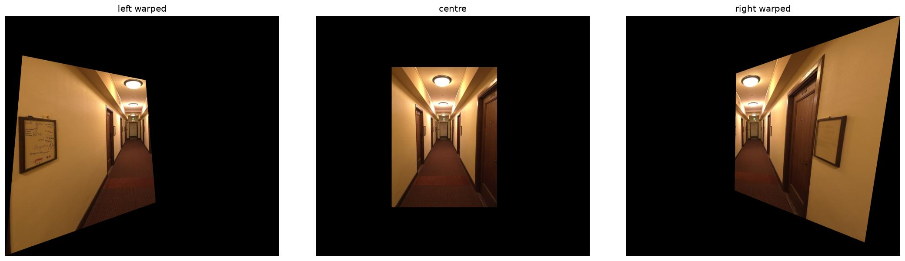
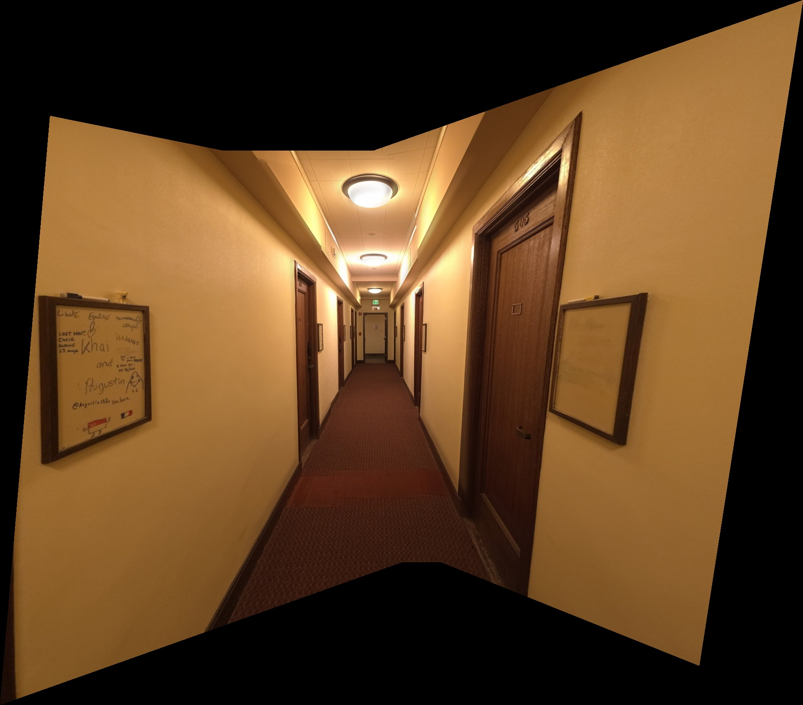
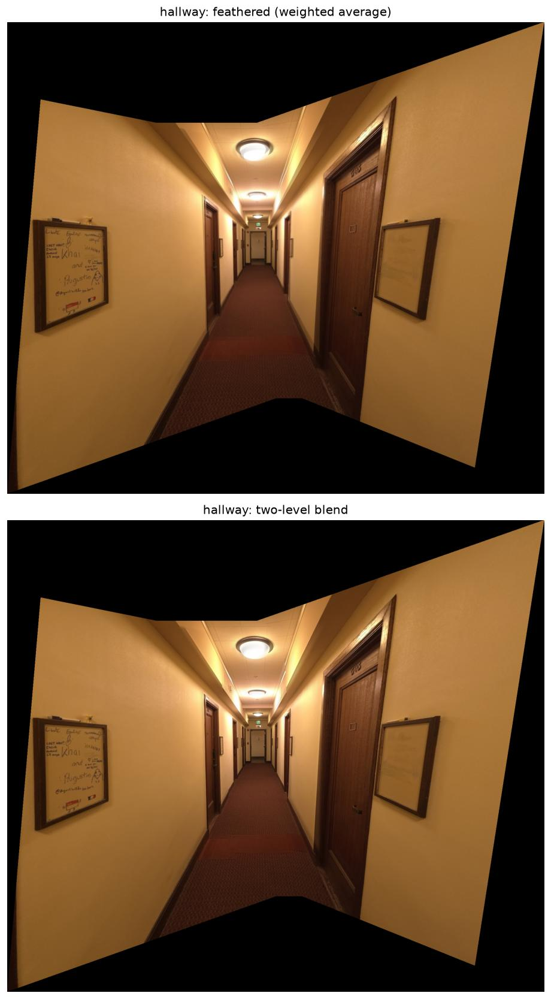
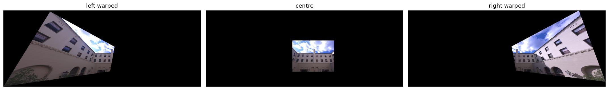
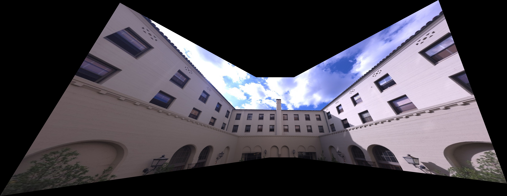
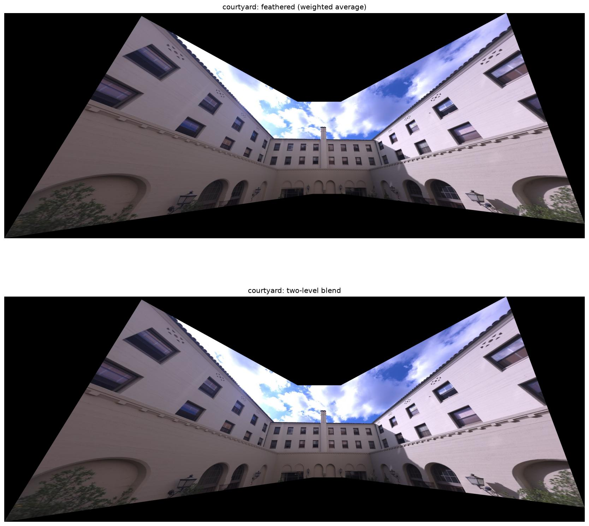
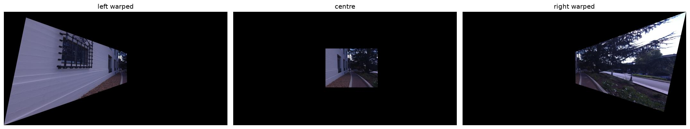
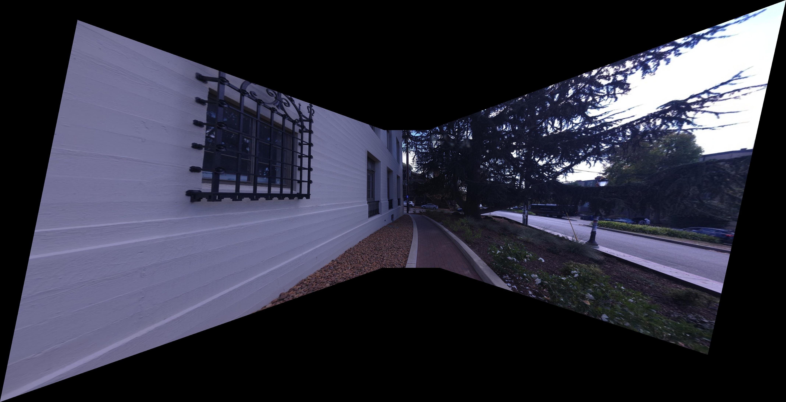
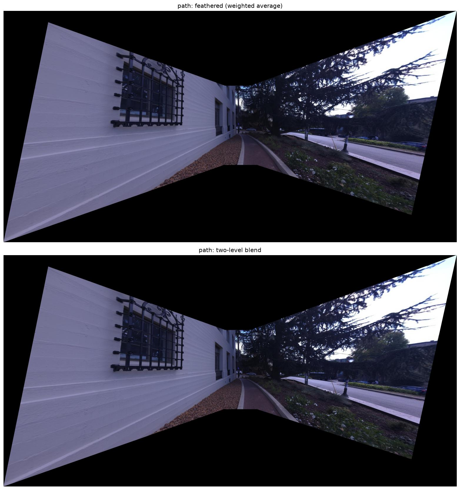
At this scale the feathered and two-level blends look very similar in all three scenes. The two-level blend only changes the result where feathering would average misaligned detail, so the similarity indicates that the hand-clicked homographies aligned the photos closely, which agrees with the reprojection errors of about 1 to 3 pixels.
All of Part A is in one notebook, proj4a_rectify.ipynb, submitted with the project. Its main functions are computeH, warpImageNearestNeighbor, warpImageBilinear, the clicking tools click_points and click_pairs, and the mosaic pipeline warp_to_canvas, blend_feather and blend_two_level.